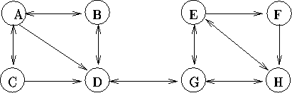

| Theseus and the Minotaur |
Those of you with a classical education may remember the legend of Theseus and the Minotaur. This is an unlikely tale involving a bull headed monster, an underground maze full of twisty little passages all alike, love-lorn damsels and balls of silk. In line with the educational nature of this contest, we will now reveal the true story.
The maze was actually a series of caverns connected by reasonably straight passages, some of which could only be traversed in one direction. In order to trap the Minotaur, Theseus smuggled a large supply of candles into the Labyrinth, as he had discovered that the Minotaur was afraid of light. Theseus wandered around somewhat aimlessly until he heard the Minotaur approaching along a tunnel. At this point he lit a candle and set off in pursuit. The Minotaur retreated into the cavern it had just left and fled by another passage. Theseus followed, slowly gaining, until he reached the k'th cavern since lighting the candle. Here he had enough time to place the lighted candle in the middle of the cavern, light another one from it, and continue the chase. As the chase progressed, a candle was left in each k'th cavern passed through, thereby limiting the movement of the Minotaur. Whenever the Minotaur entered a cavern, it would check the exits in a particular order, fleeing down the first that did not lead directly to a lit cavern. (Remember that as Theseus was carrying a lit candle, the Minotaur never exited a cavern by the tunnel used to enter it.) Eventually the Minotaur became trapped, enabling Theseus to defeat it.
Consider the following Labyrinth as an example, where in this case the Minotaur checks the exits from a cavern in alphabetical order:

Assume that Theseus is in cavern C when he hears the Minotaur approaching from A, and that for this scenario, the value of k is 3. He lights a candle and gives chase, pursuing it through A, B, D (leaves a candle), G, E, F (another candle), H, E, G (another), H, E (trapped).
Write a program that will simulate Theseus's pursuit of the Minotaur. The description of a labyrinth will identify each cavern by an upper case character and will list the caverns reachable from that cavern in the order that the Minotaur will attempt them, followed by the identifiers for the caverns which the Minotaur and Theseus were in when contact was first made, followed by the value of k. If a cavern has no exit it may or may not be in the input.
Input will consist of a series of lines. Each line will describe a scenario in the format shown below (which describes the above example). No line will contain more than 255 characters. The file will be terminated by a line consisting of a single #.
Output will consist of one line for each Labyrinth. Each line will identify the lit caverns, in the order in which the candles were left, and the cavern in which the Minotaur was trapped, following the format shown in the example below.
A:BCD;B:AD;D:BG;F:H;G:DEH;E:FGH;H:EG;C:AD. A C 3 #
D F G /E